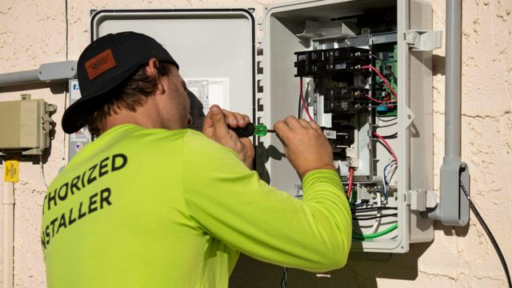

Warwick depot · head office
Warwick QLD
Mon to Fri, 7am to 4:30pm · Breakdowns 24 hours

Kestrel Hill Electrical designs, installs and maintains power and control systems for factories, farms, councils and commercial buildings across the Southern Downs and Darling Downs. Our breakdown line is answered day and night.
Request a quoteSee our projects
Private power lines, transformers and switchgear for farms, plants and large sites, installed and tested.
02Main and distribution boards built to suit your site, then installed and tested.
03Motors, conveyors, pumps and production lines wired and brought into service.
04Lighting, power and emergency systems for shops, offices, clinics and schools.
05Network cabling and fibre links for buildings and sites that need a steady connection.
06Planned checks and fast call-outs, so a fault does not stop your day.
| Project | Sector | Client and place |
|---|---|---|
| Packing shed power upgrade | Industrial | A fruit packing business · Stanthorpe area |
| Grain handling motor controls | Industrial | A grain storage company · Darling Downs |
| Council depot and offices | Commercial | A regional council · Warwick |
| Shopping centre lighting upgrade | Commercial | A shopping centre owner · Toowoomba |
| Pump station controls | Infrastructure | A regional council · Southern Downs |
| Water treatment plant power supply | Infrastructure | A water supplier · Darling Downs |
| Quarry crusher electrical | Mining | A quarry operator · Western Downs |
| Site office and camp power | Mining | A mining services company · western Queensland |


Kestrel Hill Electrical began in 2009 as a two-person crew in Warwick. Today 28 people work from two depots, looking after factories, farms, councils and commercial buildings across the Southern Downs and Darling Downs.
A switchboard workshop in Warwick for building and testing boards.
Licensed electricians, apprentices and a drafter on one team.
Safety plans, job records and test results kept for every site.
We visit, listen and measure up.
You get the scope, price and dates in writing.
Licensed crews do the work and test it.
You get the records and a number to call.
Warwick QLD
Mon to Fri, 7am to 4:30pm · Breakdowns 24 hours
Toowoomba QLD
Mon to Fri, 7am to 4:30pm
They planned the shutdown with us and finished on the day they said.
Good communication, tidy work and clear records at the end.
We called on a Saturday night and the power was back before morning.
The Southern Downs, Darling Downs and western Queensland. For larger jobs we will travel further.
Yes. We plan shutdowns and staged changes so your production keeps going wherever it is safe to do so.
Yes. Our breakdown line is answered 24 hours a day. Call the office on (07) 5550 0263 or the after-hours mobile on 0491 570 006.
Yes. Our licence details and insurance certificates are shown on this site and sent with every quote.
A licensed electrician will call you back within one working day.